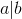
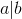
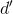
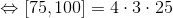

Divizibilitatea numerelor întregi
Mulţimea divizorilor unui număr întreg
Definiția NÎ18: Un număr întreg divide alt număr întreg
Numărul întreg  ,
,  , divide numărul întreg
, divide numărul întreg  și scriem , dacă există un număr întreg
și scriem , dacă există un număr întreg  astfel încât .
astfel încât .
Observații:
- Orice număr întreg are divizori întregi, adică atât divizori pozitivi, cât şi divizori negativi.
- Orice număr întreg are cel puţin patru divizori: . Aceşti divizori se numesc divizorii improprii ai numărului . Un număr care are doar divizori improprii se numeşte număr prim. Orice alt divizor se numeşte divizor propriu.
- Mulţimea divizorilor unui număr întreg se notează cu .
Exemple:
- , deoarece , astfel încât .
- Mulţimea divizorilor întregi ai numărului
 este: .
este: .
Definiția NÎ19: Divizor comun
Un număr întreg se numeşte divizor comun al numerelor întregi şi dacă şi .
Definiția NÎ20: Cel mai mare divizor comun (c.m.m.d.c.)
Un număr întreg  se numeşte cel mai mare divizor comun al numerelor şi (prescurtat c.m.m.d.c) dacă:
se numeşte cel mai mare divizor comun al numerelor şi (prescurtat c.m.m.d.c) dacă:
- este divizor comun al lui şi , adică și ;
- orice alt divizor comun  al lui şi divide neapărat pe , adică dacă şi , atunci .
C.m.m.d.c. al numerelor întregi şi se notează astfel: .
Observație:
Din definiţia c.m.m.d.c rezultă că:
Algoritmul de aflare a c.m.m.d.c.
Pentru a afla c.m.m.d.c a două sau mai multor numere întregi se procedează astfel:
- Se descompun numerele în produs de puteri de numere prime.
- Se iau factorii primi comuni, o singură dată, la puterea cea mai mică şi se înmulţesc între ei.
Exercițiu rezolvat:
Să se calculeze c.m.m.d.c al numerelor:
- și .
 și .
și .
Soluție:
- Din observația de mai sus, avem că .
Conform algoritmului de aflare a c.m.m.d.c descris mai sus, descompunem numerele şi obţinem că:


Așadar, am obținut că:

 .
.
- Descompunem numerele şi obţinem că:


.
Mulțimea multiplilor unui număr întreg
Definiția NÎ21: Un număr este multiplul altui număr
Numărul întreg este multiplul numărului întreg nenul dacă există un număr întreg astfel încât  .
.
Observații:
- Dacă este divizibil cu spunem că este divizor întreg al lui .
- Notăm și citim „ este multiplu al lui ”.
- Orice număr întreg are multiplii întregi, adică atât multiplii pozitivi, cât şi multiplii negativi.
- Mulţimea multiplilor întregi ai numărului întreg
 se notează cu şi .
se notează cu şi .
Exemple:
- , deoarece există astfel încât .
- Mulţimea multiplilor numărului este .
Definiția NÎ22: Cel mai mic multiplu comun (c.m.m.m.c.)
Fie şi două numere întregi. Un număr întreg  se numeşte cel mai mic multiplu comun (prescurtat c.m.m.m.c) al numerelor şi , dacă:
se numeşte cel mai mic multiplu comun (prescurtat c.m.m.m.c) al numerelor şi , dacă:
- este multiplu comun al lui şi (, );
- orice alt multiplu comun
 al lui şi este multiplu al lui , adică şi , de unde obținem că .
al lui şi este multiplu al lui , adică şi , de unde obținem că .
Observație:
Avem că:
.
Algoritmul de aflare a c.m.m.m.c.
Pentru a afla c.m.m.m.c a două numere întregi se procedează astfel:
- Se descompun numerele în produs de puteri de numere prime;
- Se iau factorii primi comuni şi necomuni, o singură dată, la puterea cea mai mare şi se înmulţesc între ei.
Observații:
- C.m.m.m.c a două numere întregi şi se notează cu
![[a,b]](../media/webbooks/673/5501/images/equations/ld0zg8mlroccsqrp7a3kfg==.gif) .
. - Din definiţia c.m.m.m.c rezultă că:
Exercițiu rezolvat:
Să se calculeze c.m.m.m.c al numerelor:
- şi .
- și .
Soluție:
- Avem că .
Din descompunerea numerelor avem că:

.
- Descompunem numerele şi obţinem că:



.
Propoziția NÎ23: Proprietăți ale relației de divizibilitate în mulțimea numerelor întregi
- Oricare ar fi numărul întreg , atunci , unde este diferit de zero.
- Oricare ar fi numărul întreg , atunci , unde diferit de zero şi .
- Oricare ar fi două numere întregi şi , atunci , şi
 (produsul a
(produsul a  numere naturale este divizibil cu fiecare factor al produsului), unde şi sunt diferite de zero.
numere naturale este divizibil cu fiecare factor al produsului), unde şi sunt diferite de zero. - Oricare ar fi numerele naturale , dacă şi , atunci
 , unde şi sunt diferite de zero.
, unde şi sunt diferite de zero. - Oricare ar fi numerele naturale , dacă şi , atunci , unde este diferit de zero.
- Oricare ar fi numerele naturale , dacă , atunci , unde este diferit de zero.
Accesează pagina separată acestui capitol pentru a vedea cum se aplică toate aceste noțiuni teoretice în exerciții și problemele pregătite pentru tine de către profesorii noștri de matematică.